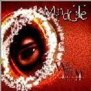

Home Artist links Label link

Mind Gate - Willow Whisper
| Artist: | Mind Gate |
| Title: | Willow Whisper |
| Label: | Independent |
| Length(s): | 32 minutes |
| Year(s) of release: | 2003 |
| Month of review: | [08/2003] |
Line up
Tracks
| 1) | Before Time | 9.52
|
| 2) | Arcs Of Fallen Heaven | 5.08
|
| 3) | Madness | 8.54
|
| 4) | Lost Dreams | 8.36
|
Summary
Mind Gate is a Polish band moving in the prog metal vein. This disc is apparently a self released CDR. They started out in 2000 as a hard rock heavy metal cover band (Led Zep, Black Sabbath, Iron Maiden)
The music
The band express themselves in English, albeit sometimes flawed both in meaning and pronunciation. In order to avoid any discussion, or so it would seem, about the progressive status of their music, they stuff their compositions with a high number of odd time signatures (each composition, that is), as well as lots of breaks. This combined with the unsecure, and as already mentioned, accented vocals makes for a 'potent' brew. Sure, the music has pretty decent moments, and could seriously be called interesting, but mostly so when the band do not strive so hard to come across as complex or technically oriented. This is the most notable Dream Theater influence they have. The key sections are, although a bit nervy at times, a stable factor in this band's music, and seem to have some Mark Kelly influences. However, the keys are most often dominated by either vocals or drums.
Madness is probably the least neurotic track, due to a more or less lengthy instrumental key section, and a rather complex guitar solo towards the end with some pretty good bass support. Unfortunately this ends in chaos, brought on, once again, by the drummer. Also this track has some gruntish vocals, alongside the 'regular' vocals.
Conclusion
Mind Gate clearly have a bit of work to do before they can make a decent album. Having said that, this album does display promise. The compositions mostly are pretty good in base, but the addition of too many time signature changes and other neurotics drown out the melody. Beside that, Czerwik should really work on preventing singing off key. Switching to Polish might help in doing so. For the time being: although a sympathetic effort, this is a not an album I would recommend.
© Roberto Lambooy